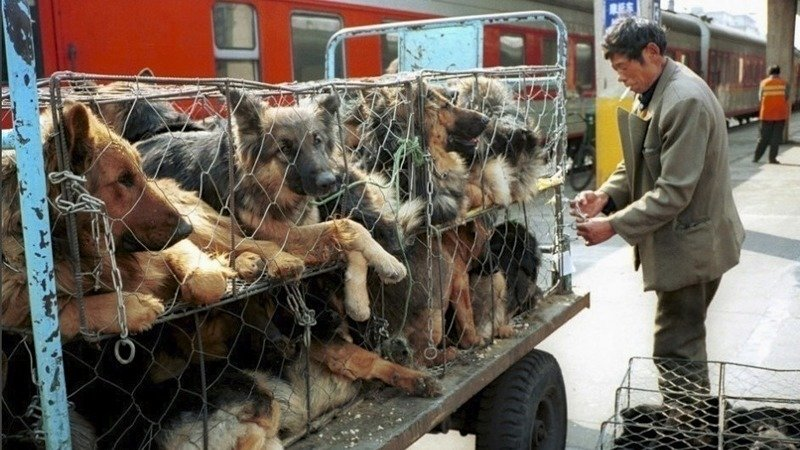

Karališkas tigras | Kailiniai, avikaliai iš kailių salono Karališkas tigras kolekcijos
 Apie mus Patarimai Kolekcija Fotosesijos Žiniasklaida Kontaktai Apie mus Patarimai Kolekcija Fotosesijos Žiniasklaida Kontaktai Karališkas tigras | Kailiniai, avikaliai iš kailių salono Karališkas tigras kolekcijos 15253 home,page-template,page-template-full_width,page-template-full_width-php,page,page-id-15253,qode-quick-links-1.0,ajax_fade,page_not_loaded,,qode-title-hidden,paspartu_enabled,paspartu_on_bottom_fixed,qode-theme-ver-11.2,qode-theme-bridge,wpb-js-composer js-comp-ver-5.2.1,vc_responsive
SVARBI INFORMACIJA
Dar turite galimybę už Jums patrauklią kainą pasiruošti šaltai žiemai. Taikomos
20%-30%- 50%- 70%
NUOLAIDOS !!!
KARALIŠKO TIGRO KOLEKCIJA
KAILINIAI
AVIKAILIAI
ODA
PALTAI
AKSESUARAI
MES BENDRADARBIAUJAME
„Karališko tigro“ kailių salone rasite platų garsiausių Italijos, Ispanijos, Prancūzijos, Suomijos, Anglijos ir Ispanijos dizainerių odos ir kailių drabužių pasirinkimą.
Tai pasaulyje pripažinti vardai kaip „Vinicio Pajaro“, „Gemmi“, „Aspel“, „Rizal“, „Fontani“, „Olivieri“, „Sprung Freres“, „Soulis“, „Gabriel angeli“, „Romagna furs“, „Afrodite“, „Rosafox“, „Gallotti“, „Mala Mati“, „Shemesh“, „Nello santi“, „Pell Xavier“, „Friitala“, „Blancha“, „Tony Enzo“, „Ranch anfor“, „Dolce Rebecca“.bei daugelis kitų.
MŪSŲ DĖMESYS
KLIENTAMS
Gerai išmanantis parduodamą produkciją „Karališko tigro“ kailių salono kolektyvas visuomet nuoširdžiai padės ne tik susipažinti su naujausiomis mados tendencijomis, bet ir priderinti mėgstamą drabužio spalvą bei stilių. Stengiamės, kad kiekvienas klientas kuo ilgiau galėtų dėvėti ir džiaugtis įsigytu drabužiu, todėl kiekvieną perkamą drabužį impregnuojame, patariame, kaip jį prižiūrėti, valyti bei duodame specialius maišus laikymui. Kiekvienas mūsų klientas bet kada gali kreiptis patarimo ir jis neliks nuviltas.
MŪSŲ DĖMESYS
KLIENTAMS
Gerai išmanantis parduodamą produkciją „Karališko tigro“ kailių salono kolektyvas visuomet nuoširdžiai padės ne tik susipažinti su naujausiomis mados tendencijomis, bet ir priderinti mėgstamą drabužio spalvą bei stilių. Stengiamės, kad kiekvienas klientas kuo ilgiau galėtų dėvėti ir džiaugtis įsigytu drabužiu, todėl kiekvieną perkamą drabužį impregnuojame, patariame, kaip jį prižiūrėti, valyti bei duodame specialius maišus laikymui. Kiekvienas mūsų klientas bet kada gali kreiptis patarimo ir jis neliks nuviltas.
DOVANŲ KUPONAI
Nesukite galvos dėl dovanos
Suteikite džiaugsmo ir šilumos savo artimam žmogui
Mus rasite
Adresas: Laisvės prospektas 125A
Pasažas “Pas Juozapą”, Vilnius
Tel: 8 5 2301051
Tel./faks: 8 5 2302272
El.paštas karaliskas@tigras.lt
Facebook
Naujausi įrašai
Ateities žmogus pagal Mečislovą Subelį Itališki kailiniai: aukštos mados atspindys kasdienybėje Ispaniški avikailiai- kokybiški, lengvi ir ilgaamžiai “ Karališko tigro“ klientams suomiška kokybėPartneriai
@ 2017. Visos teisės saugomos. UAB Karalištas tigras. Sprendimas:WEBGuru